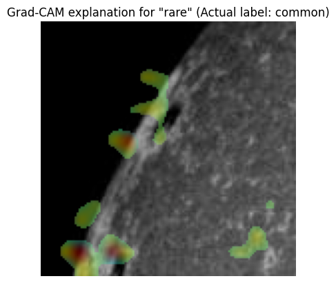

gradcam_explain_image_sample#
- class imbal.classification.gradcam_explain_image_sample(sample, model, last_conv_layer_name=None, class_names=None, label_to_explain=None, actual_label=None, preprocess_fn=None, alpha=0.4, importance_threshold=0.5, cmap='jet', figure_save_path='gradcam-explanation.png', save_figure=False, show=True, return_heatmap=False)#
Bases:
Generates a Grad-CAM explanation for a single image classification sample.
- Parameters:
sample – A single image as a NumPy array, shaped (H, W, C) or (1, H, W, C).
model – A Keras-compatible image classification model.
last_conv_layer_name – Optional name of the convolutional layer to explain. If None, the last Conv2D layer is used.
label_to_explain – Optional class/output index to explain. If None, the predicted class is used. For binary sigmoid outputs, index 0 is used.
class_names – Optional list of class names.
actual_label – Optional true class index, displayed in the plot title.
preprocess_fn – Optional preprocessing function applied before prediction.
alpha – Maximum heatmap overlay opacity.
importance_threshold – Minimum normalized importance required for a region to appear in the overlay.
cmap – Matplotlib colormap name.
figure_save_path – Path where the figure is saved if save_figure=True.
save_figure – Whether to save the visualization.
show – Whether to display the visualization.
return_heatmap – Whether to return the raw heatmap too.
- Returns:
If
return_heatmapis False, returns a NumPy array containing a superimposed RGB Grad-CAM visualization image with shape (H, W, 3) and dtype uint8. Ifreturn_heatmapis True, returns a tuple(image, map), whereimageis the superimposed RGB image, andmapis a NumPy array containing a normalized Grad-CAM heatmap with shape (H, W) and values in the range \([0, 1]\).
Example:
>>> # Assume a TensorFlow model is already saved to 'model'
>>>
>>> class_labels = ['airplane', 'bird', 'car', 'cat', 'deer',
>>> 'dog', 'horse', 'monkey', 'ship', 'truck']
>>>
>>> x = x_test[0]
>>> y = y_test[0]
>>>
>>> fig = imbal.classification.gradcam_explain_image_sample(
>>> x,
>>> model,
>>> actual_label=y,
>>> label_to_explain=y,
>>> class_names=class_labels,
>>> show=True
>>> )
Plot Examples#
Below is an example of the resulting Matplotlib pyplot plot for a correctly predicted class.
>>> imbal.classification.gradcam_explain_image_sample(
>>> x,
>>> model,
>>> actual_label=y
>>> )

An example of the resulting Matplotlib pyplot plot for an incorrectly predicted class.
>>> imbal.classification.gradcam_explain_image_sample(
>>> x,
>>> model,
>>> actual_label=y
>>> )